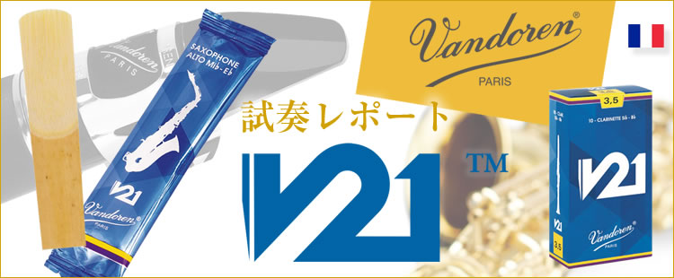

クラリネット用リード
バンドーレン・リード
クラリネット用リード
カットの違い
厚さの等しい箇所を線で示した、以下の図形をご覧下さい。
弓形の角度が尖っているほどリードの背と中心部が厚く、また反対に側面の斜面が薄くなります。
ルピック56のデザインは革新的です。リードの形が従来の縦型でなく、ヒールをより狭くした円錐形をしているからです。
これはクラリネット奏者に、リードの音、感触、レスポンスについて更なる選択肢を与えてくれます。
トラディショナル
長年にわたって高い評価を得ている一番幅広く使われているリードで、どんなスタイルの音楽にも合います。主な特質は、全音域にわたりレスポンスが素晴らしく、最高音のピアニッシモでのアタックも可能です。柔軟なので、音程のインターバルが大きい場合でも音が豊かで、サウンドの芯と輝きを持ちながら、レガートやスタッカートが楽にできます。バンドーレンリードの折り紙付きです。
V.12
V.12リードは、アルトサクソフォン用リードと同じ太さのケーンから作られます。したがって、ヒールが厚く、トラディショナルより若干ティップが厚く、∗パレットが長くカットされています。パレットが長いということは、振動しやすく深く豊かな音になります。ティップが厚いことは、最適なアタックが得られ、その上耐久性が増します。V.12はE♭クラリネット用とバス・クラリネット用も追加され、それぞれあたたかく豊かで力強いサウンドです。
∗パレット 表皮を削った曲線からティップまでの長さ。最大限に振動する部分。
ルピック 56
バンドーレン本社の番地が商品名となったルピック 56は、ジャーマン・スタイルのリードと非常に近いヒール･テーパーを持ったこのリードは厚めのケーンから製造されており、全音域で非常にバランスが良くレスポンスが早く、豊かで芯があり、非常に純粋な音を発します。リードの硬さをより細分した事により適切な選択ができるようになりました。V21
V21は56ルピックと同様の円錐形とV.12のカットの形状を組み合わせてデザインされました。その結果、全音域でより吹きやすくなり、あたたかな、深みのある音が出せるようになりました。また鮮明な響きで、反応のよさも抜群です。
V21は広い音域での跳躍も均一で豊かな音で演奏することができる完璧なリードです。

ジャーマン＆オーストリアン・リード
これらのリードはジャーマン（エーラー）システム用マウスピースの特徴に適応するようにカットされています。
V21 ジャーマン
ジャーマンシステムのマウスピース用に設計され、バンドーレンのD シリーズと相性がよく、先端がわずかに広めで、幅広いダイナミックスレンジが特徴。雑音が入りにくく、正確な音程、軽快な反応が得られます。
ホワイトマスター
ホワイトマスターはジャーマンシステムのクラリネット用に設計されており、次の2種類があります。●トラディショナル・バージョン
●ニューバージョン：最新のジャーマン・スタイルのマウスピース（開きが大きく、ロングフェーシングのマウスピース）により適したホワイトマスター・リードの進化型です。
V21 オーストリアン
バンドーレンW270をはじめとるすオーストリアタイプのマウスピースに最適なリードです。●ブラックマスター、ブラックマスター・トラディショナルよりもやや幅広のティップ。
●安定した状態が持続します。
●美しい音色と高い柔軟性、軽快な反応が特徴です。
●ベームシステム用マウスピースにもご使用いただけます。
ブラックマスター
ブラックマスター・リードはホワイトマスター・リードよりも幅が広く、厚めで、次の2種類があります。●ブラックマスター・リード：オーストリアン・マウスピース用に設計されており、その反応のよさと音色から、ベーム・システムのマウスピースにも適応可能です。
●ブラックマスター・トラディショナル・リード：ウィーン派の伝統に基づき、オーストリアン・マウスピースにぴったり合うようにカットされ、カット面は長めになっています。
メーカー製造終了に伴い、間もなく販売終了となります。 お求めの際はお近くの販売店までお問い合わせください。（2022年4月現在）